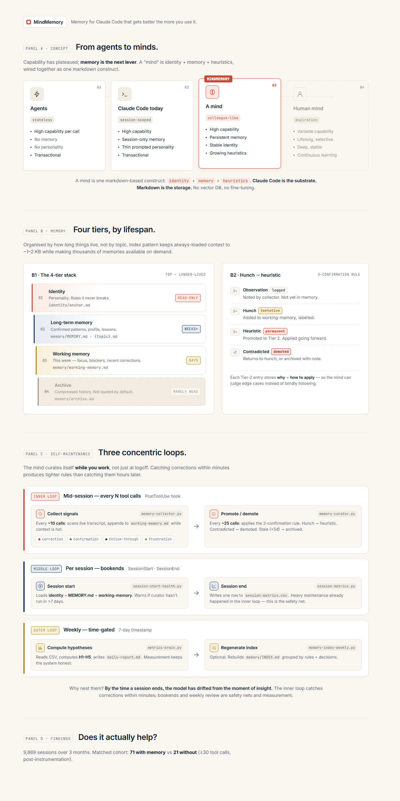

Why the next productivity gain in knowledge work won't come from smarter AI. It will come from AI that remembers you.
Every senior leader your organisation employs has the same complaint about AI tools: "I have to keep telling it the same things."
The marketing director re-explains brand voice every chat. The CFO re-pastes last quarter's structure into every analysis. The CHRO re-teaches what "high potential" means in your culture, every single time. The work is real. The AI is capable. The friction sits in between — in the absence of memory.
This isn't a prompt-engineering problem. It's a context-engineering problem. And it's the single biggest lever left for making AI tools feel less like a search box and more like a colleague.
Most AI products that mention memory mean something narrow: chat history. The system remembers what you said earlier in this conversation. That's session state, not memory. Close the tab and it's gone.
Real memory has four properties of a competent colleague who has worked with you for two years:
This is how a strong analyst, EA, or trusted peer carries you across years of work. It's also what AI tools have been missing — and what we've now built for the case where the work itself is computational: software, analysis, content, decision support.
We built MindMemory as a research preview to test one question: can a structured memory layer make an off-the-shelf AI tool measurably more useful, week after week?
The visual on the next page summarises the architecture. Four panels:

We instrumented every session over a 12-week period. 9,869 sessions captured. After applying matching criteria (≥30 tool calls, post-instrumentation cutoff), 92 sessions form the comparable cohort: 71 with memory loaded vs 21 without.
What the wins say. When memory is loaded, sessions are denser, more productive, and orient to real work faster. The single largest effect — 4× more productive output per session — is consistent with the qualitative report from the primary user: "You remembering things helps me. I am much less frustrated with the process."
What the null says. The headline outcome — fewer repeated corrections — has not yet been demonstrated. Three honest theories: selection bias (memory loads on harder work); coverage gap (memory doesn't yet hold the right lessons); recall gap (memory is there but not applied under pressure). We're publishing the result rather than burying it. The system measures itself; we report what the measurement says.
If you employ knowledge workers and they use AI tools daily, this question is on your desk whether you've named it or not:
Every correction your team types into an AI tool is a piece of organisational knowledge that vanishes the moment they close the tab.
Across thousands of sessions per week per company, the cumulative leak is enormous. Brand voice, regulatory context, customer history, internal vocabulary, lessons learned — all retyped, every time, by the people whose time is most expensive.
MindMemory is one answer. The pattern is general:
The CoMindLab thesis: the 5% of organisations that succeed with AI don't have better technology. They have better collaboration design. Memory is one of the highest-leverage design choices available right now, and it's being left on the table by tools that focus on capability instead of continuity.
MindMemory itself is open source (MIT) and free for any team to install. The repository is at github.com/CoMindLab-ai/mind-memory.
For organisations that want the pattern adapted to their specific work — brand voice, regulatory context, decision frameworks, role-specific memory layers — CoMindLab offers three engagement models:
Three concrete next steps, in order of commitment: